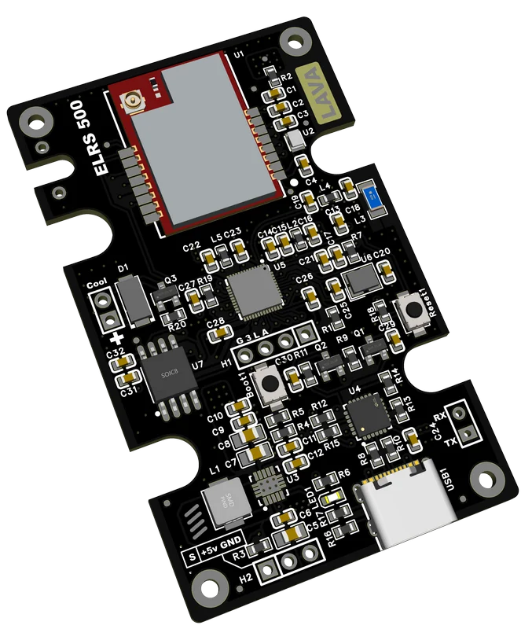

click image
ELRS transmitter
Built an ELRS transmitter for a racing FPV drone — 500 mW output power with no cooling fan required. Works flawlessly in real conditions.
Built an ELRS transmitter for a racing FPV drone — 500 mW output power with no cooling fan required. Works flawlessly in real conditions.

Developed a control panel for an industrial frequency inverter. It features galvanically isolated power and CAN signal, non-volatile memory for saving and transferring all settings, a color display, and LED load indication..

Together with my team, we developed a complete set of electronics for what might be the world’s first open-source electric car. My role: circuit design of a large universal control board with multiple inputs and high-power outputs, plus PCB layout for all boards in the system. We’re now working on the second version and full documentation, which will be released on GitHub. The goal is to create a simple EV that anyone can assemble in their own garage from readily available parts — and drive it on public roads.

Commercial motor controller optimized for EMI, with snubbers and PCB layout techniques to minimize emissions.

Custom RF front-end with filters and LNA, tuned for operation in crowded ISM bands.

Ruggedized CAN interface with isolation, for vehicle telemetry and diagnostics.

Smart BMS with cell balancing, SOC estimation, and safe charging algorithms for Li-ion packs.

Touch HMI with robust UI and persistent settings storage for industrial automation equipment.

Evaluation board for digital signal processing and prototyping of custom IP cores.

Modular PSU with high efficiency and thermal management for rack systems.

Compact implementation of USB Power Delivery sink for fast-charging devices.

Weatherproof sensor node for agriculture telemetry with long-life battery operation.

Combines IMU, magnetometer and GPS for precise positioning and orientation tasks.

Prototype of Qi-compatible wireless power transmitter with tuned coils and shielding.

Analog preamplifier with ultra-low noise floor for audio measurement equipment.

Custom test fixture for automated functional testing in production environments.

Secure OTA system for remote firmware updates with rollback and verification features.

Mechanical and electrical design of a board-to-board connector with locking mechanism.

Thermal analysis and PCB modifications to improve heat dissipation in dense assemblies.

Complete set of fab files, pick-and-place, and BOM optimizations for cost-effective production.